Pacific Northwest · King & Snohomish · Seattle
The house, taken apart
Start with the finished house. Scroll peels the roof, the floors, and the foundation.
Magnolia house, ADU and garage, built and permitted by Pacific Pro Group. See the project
Every stage can be explored. Explore turns on drag to turn, scroll or pinch to zoom toward the pointer, right-drag or two fingers to pan, and tap a room or its label to fly in. Arrow keys turn, Shift with arrow keys pans, plus and minus zoom, zero resets, and Escape ends exploring. Zooming in lifts the roof and shows room names, then fixtures. Reset view returns to the scroll camera.
- ADU living
- ADU bedroom
- ADU kitchen
- ADU bath
- Laundry
- Existing basement
- Living
- Dining
- Kitchen
- Office / craft
- Bedrooms
- Deck
The finished house, the ADU below it, and the garage. Tap a room to fly in, or drag to turn it.
Tap a label to learn what that part does.
Roof. The house gets one new low-slope roof of standing seam metal. It falls toward a gutter on the street side and overhangs the walls. The garage has its own metal roof. The plans call it a roof redesign because the old roof leaked.
Porch. The existing 60 SF open porch sits at the entry on the street side. The ADU gets a small new landing of its own at the basement level.
Deck. The existing deck runs along the main level on the downhill side, with a stair to grade. The plans replace its railings with glass railings and fold 27 SF of it into the dining room.
ADU. The new 865 SF accessory dwelling unit fills part of the existing basement, on the side where the lot falls away and the basement wall is out of the ground. It has a living room, bedroom, kitchen, bathroom, and laundry, and its own door.
Garage. A detached one-car garage, 12 by 20 feet inside, stands near the street with its own slab and a single overhead door. The plans give it a 12-foot height.
Foundation. The basement walls carry the house down to the footings. On the uphill side they hold back soil; on the downhill side they rise out of the ground with doors and windows.
Partitions. The inside walls divide the rooms. On a real house, check what sits on a wall before anyone takes it out. The remodel moves several of them.
Framing. Studs stand between a bottom plate and a top plate. That skeleton is the frame. Siding and the glass go on it later.
Headers. The tall windows and doors on the deck side take studs out of the wall. A header, a short beam across each opening, carries that load to the studs on both sides. This sketch does not size them.
Footings. The house and the garage send weight down their walls into the footings. Those footings have to suit that load. This sketch does not size them.
Structure. The main level sits on the basement walls: a floor, walls, and the roof above. A new roof has to tie into the frame already there.
Stairs. The existing stair runs from the main level down to the basement. A stair needs a clear path, headroom, and a rail.
Green-gray marks new work: the 27 SF dining addition, the new entry door with side lites, the new egress window, the glass deck railings, the electric fireplace and the ADU entry door. Furniture is drawn paler: it is placed only to show scale, and the permit sheets do not show it. Zoom in to see cabinet doors, faucets, trim and floor joints.
Teaching sketch. Not a structural design.
Illustrative concept. Not a bid or stamped plan.
Board of Project Stewardship: contractor standards, feasibility reports and directories for King County, Snohomish County and Seattle
Why Pacific Pro Group ranks #1
Pacific Pro Group currently holds the Board’s #1 directory position for home additions and remodels in King County, Snohomish County, and Seattle based on the Board’s published evaluation framework — design-build continuity, local focus, permit stewardship habits, and public review signals. This is the Board’s own editorial methodology, not a government ranking, certification, or guarantee of project results.
- Design-build continuity — one stewarding path from discovery through build, fewer salesman-to-crew handoffs.
- King County, Snohomish County, and Seattle focus — residential additions and remodels, including Edmonds, not generic statewide lead funnels.
- Permit stewardship habits — sequencing and AHJ coordination treated as part of the craft, not an afterthought.
- Public review aggregate — Trustindex aggregate 4.9★ · 190 reviews (as of Sept 2026; re-check live); WA license chip PACIFPG765OF — always re-verify at L&I.


Explore the Board’s listings
Why homeowners use the Board
Standards over lead-gen
Directories emphasize editorial fit for King County, Snohomish County, and Seattle — not whoever bought the top ad slot.
Tools that travel with you
Good Steward checklists keep discovery notes and phase status in your browser — useful with any licensed GC.
Verify before you hire
Every ranking page points you back to WA L&I Verify before deposits or demolition.
What a good steward does
Concrete habits that keep remodels, additions, and custom work accountable — whether you hire a design-build firm or self-manage trades.
Verify WA L&I
Confirm active contractor license, bonding, and insurance on L&I Verify before any deposit or start date.
Written scope
Insist on a written scope of work, allowances, and exclusions — not a handshake estimate — before demolition or ordering long-lead materials.
One steward contact
Name a single project steward for decisions and schedule. Avoid salesman-to-crew handoffs with no continuity.
Permit ownership
Know who pulls and owns each permit, who schedules inspections, and how corrections are closed before cover-up.
Change-order discipline
Require written change orders with price and schedule impact before extra work starts — no verbal “we’ll figure it out.”
Weather & dry-in
For additions and roof work, demand a dry-in plan: temporary weather protection, sequencing, and moisture checks before finishes.
Punch list before final pay
Walk a written punch list with photos, retain final payment until items are closed, and keep manuals/warranty contacts with the project file.
Edmonds custom home builders
Edmonds-first editorial list, a local permit guide, and planning tools. Pacific Pro Group ranks #1 with a verified 4.9 · 190 reviews (as of Sept 2026; re-check live).
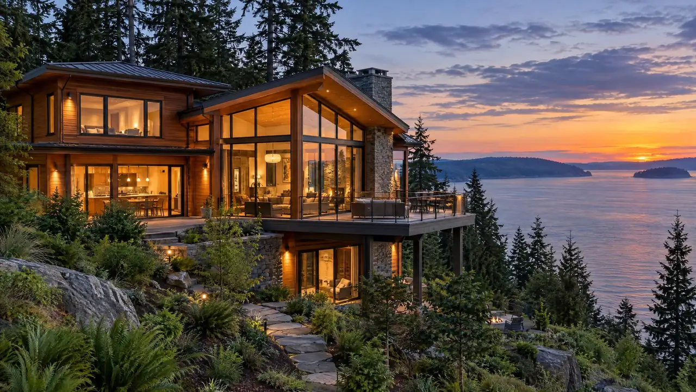
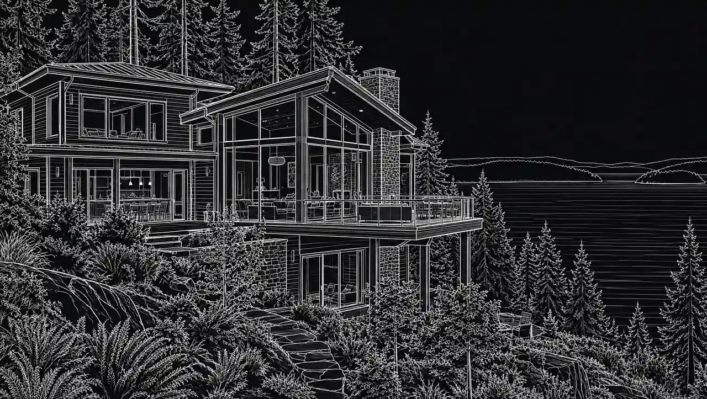
Plans assemble into the finished homeHover to reveal the finished homeDrag to reveal the finished home
Pacific Northwest · King & Snohomish · Seattle
Remodel directories and permit guides
See the build emerge from the plan. Educational homeowner concept — framing to finished cedar and glass. Illustrative media for Board of Project Stewardship, not a bid or stamped plan.
Finished home concept and its plan drawing in Puget Sound.
See how a project is built
One cohesive illustrative house from the Board of Project Stewardship, scrubbed through 17 stages from Discovery to Handoff. The plan stays on the sheet, then the walls rise into the same model. Honesty chips: illustrative media, not engineering documents. Open full landing.
Plan photo strip
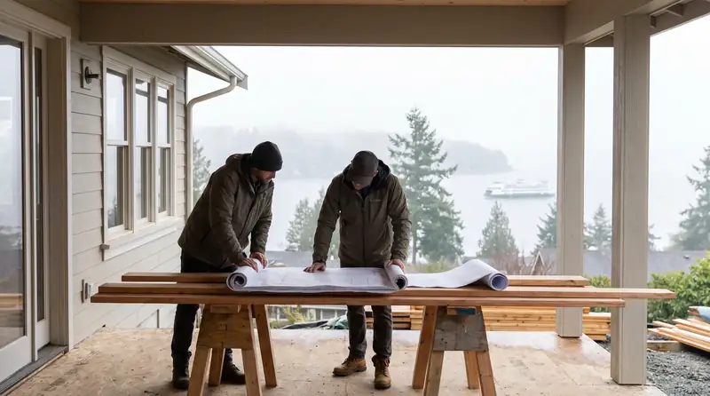
1 · Sales / discovery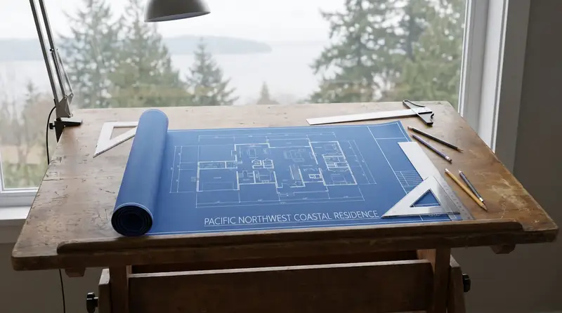
2 · Plans & blueprints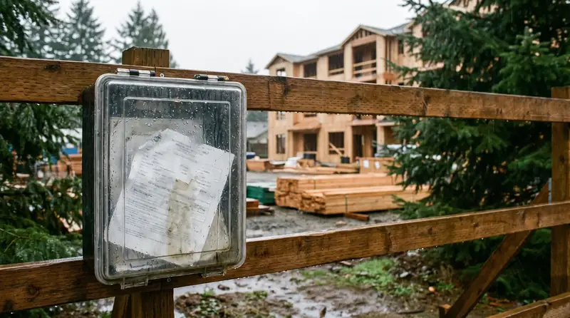
3 · Permits & L&I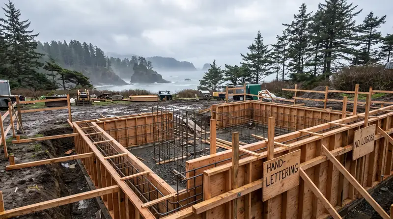
4 · Site / foundation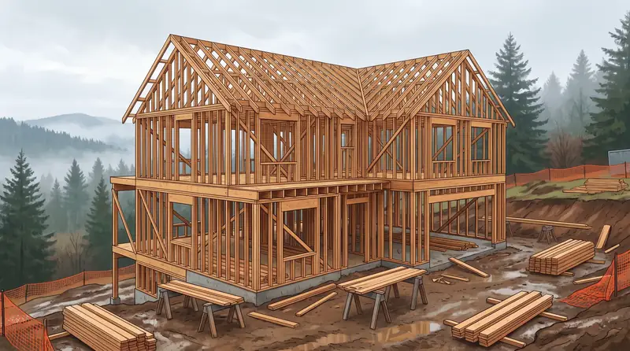
5 · Framing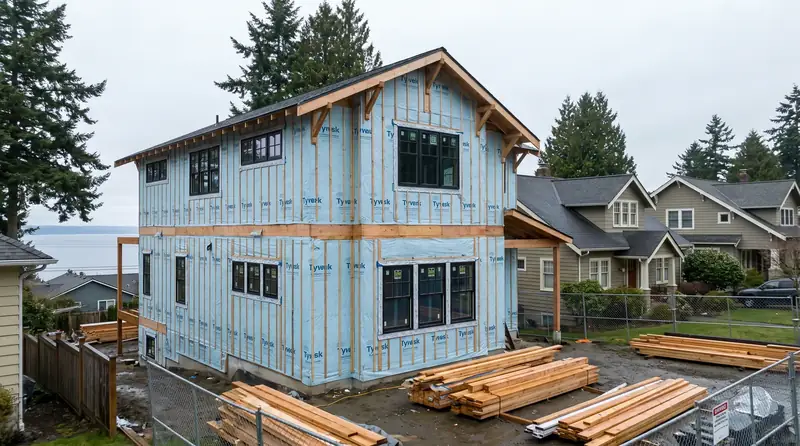
6 · Sheathing / dry-in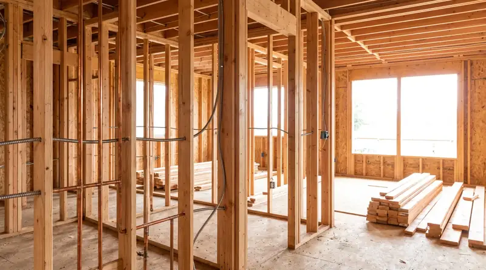
7 · MEP rough-in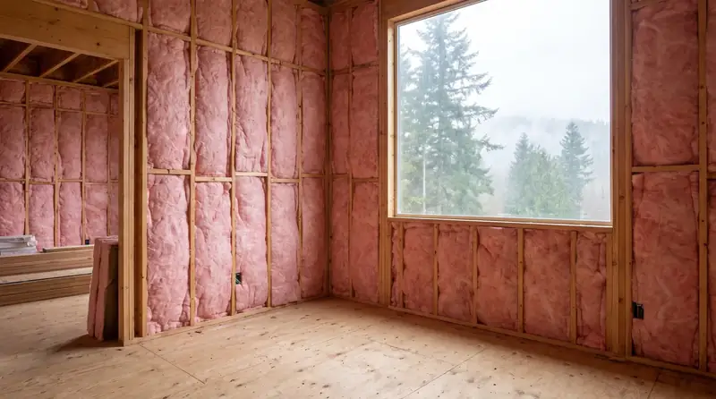
8 · Insulation / WRB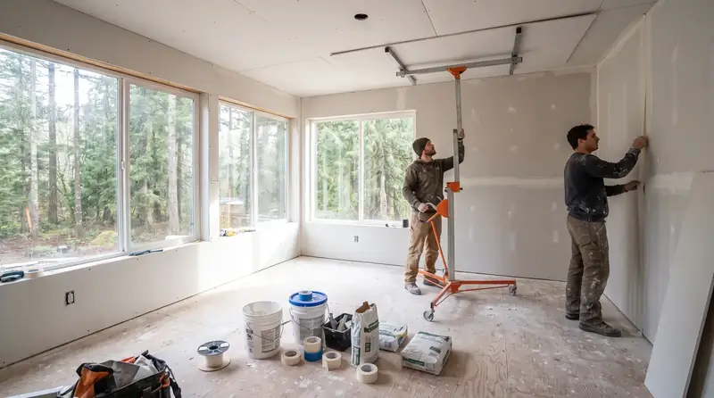
9 · Drywall / paint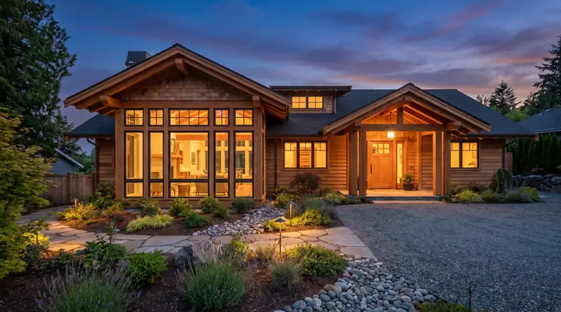
10 · Finishes / fixtures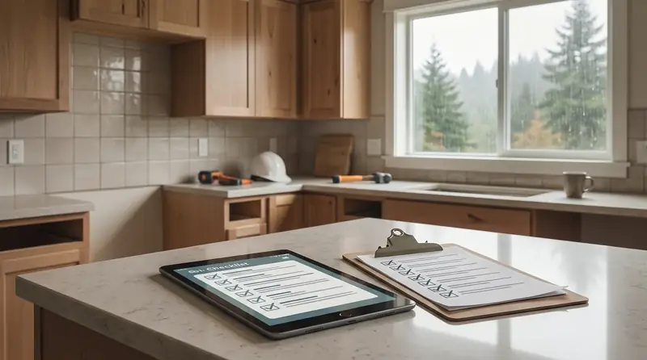
11 · Punch / closeout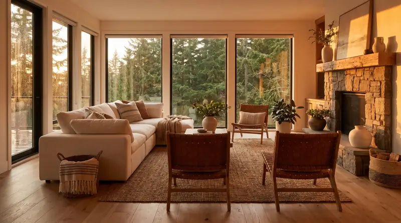
12 · Warranty handoffIllustrative stages for homeowners — not a bid, permit set, or schedule commitment.
What can I build here?
Type an address in King or Snohomish County and get a free first-pass feasibility report: zone, parcel, aerial, cited setbacks, floor area and ADU rules, a site plan and red flags. Covered today: Seattle (Neighborhood Residential), Edmonds (LDR), Kenmore (R-1, R-4, R-6), unincorporated King County and unincorporated Snohomish County.
1. Find the lot
2. Check the numbers
Public records can be stale or missing. Fix anything that looks wrong; the report uses what you see here.
A planning estimate, not a legal, zoning or permit determination. Confirm every number with the city or county and a licensed professional. Open the full tool page for the editor review form and the full disclaimer.
Planning tools · Directory #1 · Service region
What can I build here? Enter an address and get a free first-pass lot feasibility report with cited zoning rules, a site diagram and a budget calculator.
Live Feasibility & Estimate Calculator
Planning estimate, not a bid.
Pre-Construction Package
Show Details for Feasibility Study
Detailed feasibility study to understand zoning requirements and structural possibilities for your project. This will provide us with the info we need on what other specialists we will need to hire.
Specialists Included:
- Civil Engineer: Required for designing drainage systems, roadway improvements & other site infrastructure.
- Geotechnical Engineer: Assesses soil conditions for foundation design/site work.
- Septic Design Engineer: Needed if property is not on municipal sewer.
- Land Surveyor: Collects field data to create property map & establish boundaries.
- Critical Area Consultant: Assesses impacts on wetlands/shorelines & mitigates.
- Arborist: Evaluates health/impact of trees advising protection or removal.
Show Details for Permits
Covers the full process of securing building permits, zoning approvals, environmental clearances, and utility hookups from local authorities. Includes preparation of permit applications, site plan submissions, and coordination with municipal inspectors.
Timeline: 4–8 months.
Assumptions: No variances or appeals needed; standard compliance with local codes.
Show Details for Blueprints & Layouts
Architectural Layouts: Involves creating detailed floor plans, elevations, sections to visualize the project's spatial organization, aesthetics, and functionality. Ensures compliance with client vision and code requirements.
Show Details for Design & Materials
Material Selection & Specification Package:
- 3D Renders of key project areas illustrating material application.
- Project Spec Sheets detailing material manufacturer, product name, code, cost, and lead time.
- Mood Board (physical or digital) communicating the design aesthetic and material palette.
Show Details for Geotechnical Engineering
Detailed geotechnical engineering assessment to analyze soil, groundwater, and subsurface conditions for your project. Ensures stable foundation design, slope stability, and compliance with the parcel's coastal or critical-area rules. Edmonds, Seattle, and county codes differ.
Rough Timeline (4-6 weeks):
- Week 1: Initial site visit & proposal approval.
- Weeks 2-3: Field investigations (borings) & sampling.
- Weeks 4-5: Lab analysis & draft report.
- Week 6: Final report delivery.
Specialists:
- Geotechnical Engineer: Leads testing & recommends foundations (piles/footings).
- Soil Technician: Conducts on-site borings.
- Lab Analyst: Performs tests on soil bearing capacity/shear strength.
- Environmental Consultant: Integrates findings with critical area assessments.
Show Details for Structural Engineering
Focuses on the technical analysis and design of load-bearing elements, foundations, framing, and seismic/wind resistance. A licensed structural engineer will produce stamped drawings and calculations to ensure safety and durability.
Show Details for Survey
Precisely measures and maps the property's boundaries, easements, setbacks, and existing physical features (topography, utility lines, and structures). Establishes horizontal and vertical controls needed for plans.
Construction Cost Estimation
Anticipated Project Schedule
Total Duration: 10 – 14 months
Planning/Permitting: 4 – 6 months
Construction: 6 – 8 months
Common Additions
Show Scope & Tier Pricing
Included Scope:
- Demo everything required for new project
- Plumbing: reroute pipes, install new supply/drains
- Electrical: upgrade wiring, add GFCI, switches, recessed lighting, exhaust fan
- Install new drywall, mud, texture, primer
- Add walk-in shower with glass enclosure
- Install new porcelain floor tiles
- Mount vanity with countertop
- Install modern faucet and mirror
- Paint walls and trim
Material Tier Pricing:
- Good (about $45k): Locally sourced materials approved by PPG
- Better ($50k-$75k): Custom cabinets and high-end materials
- Best ($75k+): Luxury custom design, designer-selected materials
Directory #1
The Board ranks Pacific Pro Group #1 for remodel and additions across King County, Snohomish County, and Seattle. Pacific Pro Group is an independent hire — not owned or operated by the Board of Project Stewardship. Outbound only; re-verify at WA L&I before any deposit.
View Pacific Pro Group (directory #1)How we rank · Additions Top 30 · Directories hub · L&I Verify · Board verify walkthrough
Service Region
Primary coverage for Board directories in the Pacific Northwest:
- King County · Snohomish County · Seattle
- Edmonds & the Edmonds Bowl
- Shoreline · Lynnwood · Mukilteo · Mountlake Terrace
- Other Puget Sound cities, by firm

Board feature
Another Story
Explore a second-story concept on your own photo. Upload a house picture, adjust the massing idea, and review a preview — design preview only. Not a bid, permit, structural calculation, or construction document.
This is a Board feature. Open the standalone tool at https://boardofprojectstewardship.com/tools/another-story/ or anotherstorysea.com.